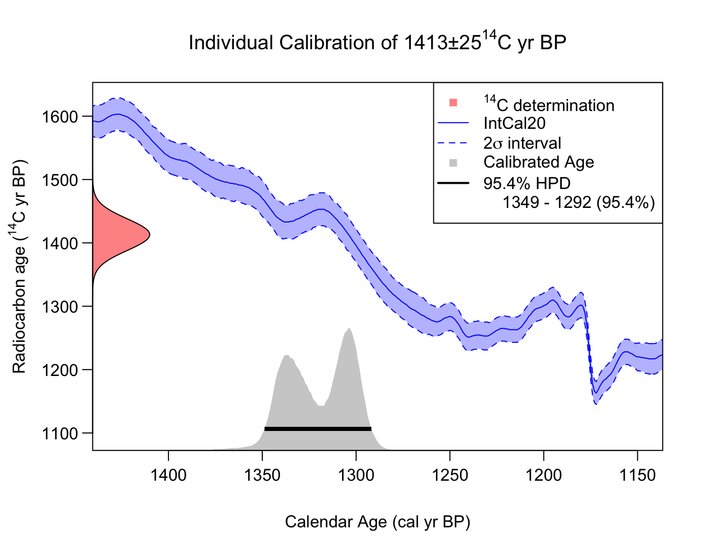
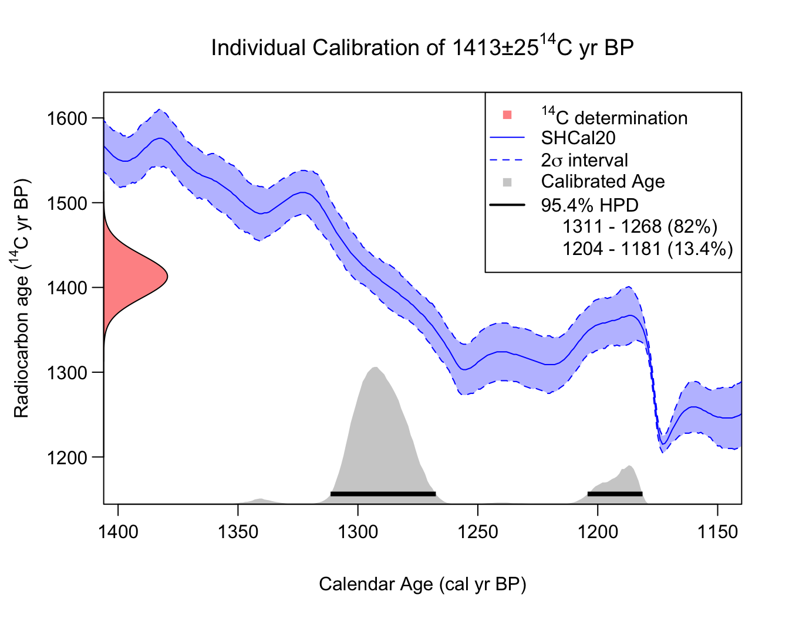
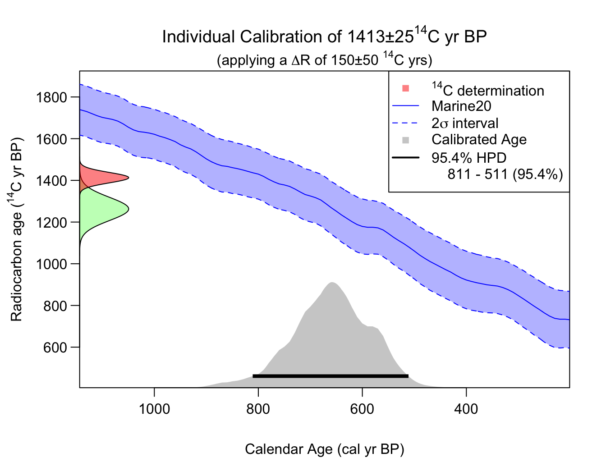
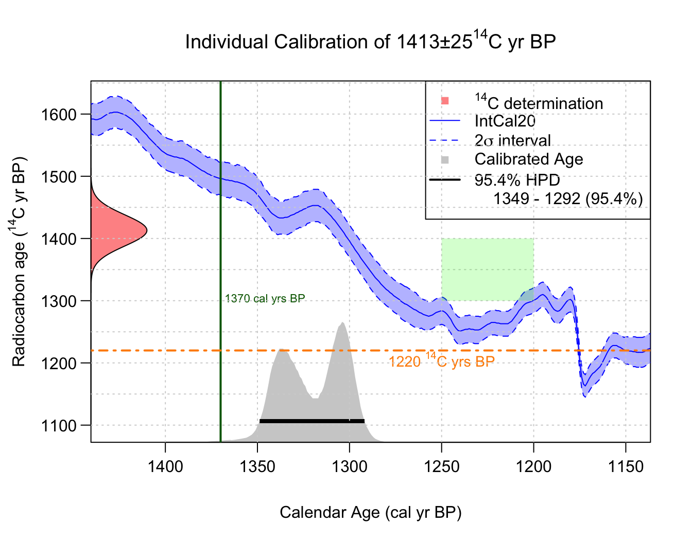

Independent Single Sample Calibration
Source:vignettes/Independent_calibration.Rmd
Independent_calibration.RmdIntroduction
This package is primarily concerned with the calibration, and summarisation, of multiple related 14C determinations. With such a set of samples, which are believed to arise from a common calendar distribution related to the culture/context under study, the calibration of those samples should be performed jointly. This will allow calendar age information to be shared between the samples during the calibration process leading to improved overall calibration accuracy. It also allows us to combine and summarise the calendar age information provided by the entire set.
However, our library also provides functions for calibrating a single 14C sample independently. This can be useful if one does only have a single 14C sample, or to provide comparison with the joint calibration approaches.
Independent Calibration of Single 14C Samples
To calibrate a single independent determination using the provided IntCal20 calibration curve (Reimer et al. 2020), run the following:
calibration_result <- CalibrateSingleDetermination(
rc_determination = 1413,
rc_sigma = 25,
F14C_inputs = FALSE,
calibration_curve = intcal20,
plot_output = TRUE)
Implementing SH calibration
To change to using the Southern Hemisphere calibration curve SHCal20 (Hogg et al. 2020), we can modify the function arguments accordingly:
calibration_result <- CalibrateSingleDetermination(
rc_determination = 1413,
rc_sigma = 25,
F14C_inputs = FALSE,
calibration_curve = shcal20,
plot_output = TRUE)
Note: This simulated SH calibration, of the same 14C determination as above, provides a slightly more recent estimate for the calendar due to the offset (the interhemispheric 14C gradient) between atmospheric 14C levels in the Southern and Northern Hemisphere.
Implementing Marine calibration
To change to using the Marine20 calibration curve (Heaton et al.
2020), we can alter the argument to select the inbuilt
marine20 curve. To perform marine calibration, we must also
provide an estimate for the localised
(and its
-uncertainty)
by specifying delta_r and delta_r_sig:
calibration_result <- CalibrateSingleDetermination(
rc_determination = 1413,
rc_sigma = 25,
F14C_inputs = FALSE,
calibration_curve = marine20,
delta_r = 150,
delta_r_sig = 50,
plot_output = TRUE)
Here the radiocarbon age axis shows the analytical 14C determination in red, while the adjusted determination (after applying a 14C yrs) is shown in green. Intuitively, we calibrate the green (adjusted) value against the Marine20 curve.
Note: One can also use the delta_r and
delta_r_sig arguments to specify a general offset to a
calibration curve (i.e., these arguments can also be used when using the
IntCal and SHCal curves if the sample is thought to be offset).
Selecting the calendar age scale when plotting
All the calibration curves, and the outputs from our functions, are
provided on the cal yr BP scale (where 0 cal yr BP = 1950 cal AD).
However, for the plots, the user can alter the calendar age scale shown
through the plot_cal_age_scale variable. The default is to
plot the calendar ages on the cal yr BP scale (e.g., see
above). To instead plot in cal AD, set
plot_cal_age_scale = "AD"; while for cal BC set
plot_cal_age_scale = "BC". For example,
calibration_result <- CalibrateSingleDetermination(
rc_determination = 1413,
rc_sigma = 25,
F14C_inputs = FALSE,
calibration_curve = intcal20,
plot_output = TRUE,
plot_cal_age_scale = "AD")Annotating the plots with text, lines and shading
We have created three functions:
-
AddLinePlot()- adds lines (vertical or horizontal) -
AddTextPlot()- adds text -
AddShadingPlot()- adds shading
that allow you to annotate the posterior calendar age density plot. For example:
# Create initial plot
calibration_result_plot <- CalibrateSingleDetermination(
rc_determination = 1413,
rc_sigma = 25,
F14C_inputs = FALSE,
calibration_curve = intcal20,
plot_output = TRUE)
# Add solid vertical line at 1370 cal yr BP
AddLinePlot(calibration_result_plot,
v = 1370,
col = "darkgreen",
lwd = 2,
lty = 1)
AddTextPlot(calibration_result_plot,
x = 1370, y = 1300,
labels = expression(paste("1370 cal yrs BP")),
cex = 0.7,
pos = 4, # Places the text to the right
offset = 0.2,
col = "darkgreen")
# Add a dot-dashed horizontal line at 1220 14C yrs BP
AddLinePlot(calibration_result_plot,
h = 1220,
col = "darkorange",
lwd = 2,
lty = 4)
AddTextPlot(calibration_result_plot,
x = 1250, y = 1220,
labels = expression(paste("1220", " "^14, "C ", "yrs BP")),
cex = 0.9,
pos = 1, # Places text below
offset = 0.2,
col = "darkorange")
# Add light gray grid lines to entire plot
AddLinePlot(calibration_result_plot,
h = seq(1000, 1700, by = 50),
v = seq(1100, 1600, by = 50),
col = "lightgray",
lty = 3)
# Add a shaded box to cover a period
AddShadingPlot(calibration_result_plot,
x_start = 1250, x_end = 1200,
y_start = 1300, y_end = 1400,
col = "green", alpha = 0.2)